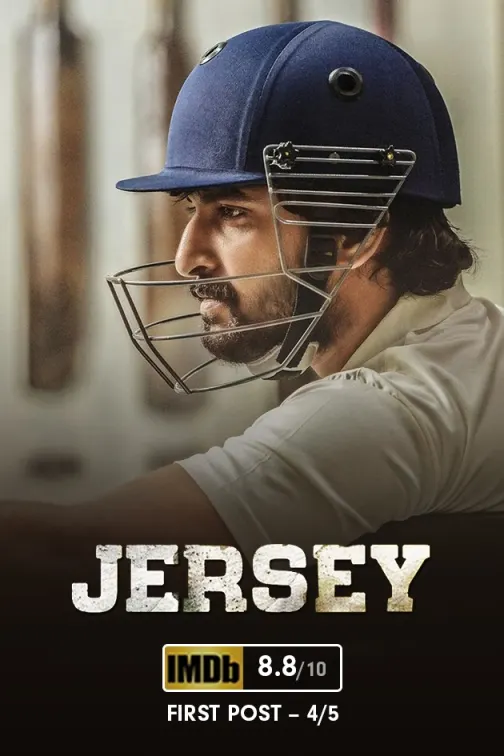

Hobbies
I like to play cricket and follow cricketing news.Learn new ways to approach the bowler. I love doing shadow batting a lot. Visualizing things always helps one to be more creative. Playing different shots for same ball of same line and length,adjusting to field,targets and match situations. Analyzing the ways to get ride of opponent players in match.Playing different situation carefully not only applicable for cricket but also for life.
Current Classes
I am currently doing a course on Full Stack Developer started on Dec'12th 2022 at Unikaksha.It started with the basics of Javscript which started really smooth and later learnt that without practise it never going to be easy. Next came the basics of HTML. over the period of one month came across new things learnt lot of stuffs.looking forward to learn more.Whenever new topic is started it goes nice and one stage comes where it feels like what is happening here. At first took a lot of time do some assignments also now but having a gut feeling this will lead to a strong base in this field.
If I could travel anywhere
Lord's Cricket Ground,London
Lord's Cricket Ground, commonly known as Lord's, is a cricket venue in St John's Wood, London.Lord's is widely referred to as the Home of Cricket and is home to the world's oldest sporting museum.Lord's is the home of the MCC Museum, which is the oldest sports museum in the world, and contains the world's most celebrated collection of cricket memorabilia, including The Ashes urn.[127] MCC has been collecting memorabilia since 1864. Lord's also has one of the largest and most comprehensive collections of books and publications dedicated to cricket. The library includes over 20,000 volumes and grows by around 400 volumes a year. The library encourages donations from authors and publishers. The library operates as a private library for MCC members on match days, but is open by appointment on non-match days.
| Team | Opposition | Winner | Captain | Year |
|---|---|---|---|---|
| India | England | India | Kapil dev | 1986 |
| India | England | India | M.S.Dhoni | 2014 |
| India | England | India | Virat Kohli | 2021 |

Favorite Movies or Tv shows
Manifest
Genre: Dram,Supernatural
Sesons: 4 (52 Episode)
Plot:While traveling from Jamaica to New York City, Montego Air Flight 828 experiences a brief period of severe turbulence. When they land at Stewart International Airport in Newburgh, New York, the plane's 191 passengers and crew learn from NSA deputy director Robert Vance that over five and a half years have passed while they were in the air, during which time they were presumed dead. As they rejoin society, the passengers begin to face the fact that their lives—and loved ones—are not the same as they were, while they also begin to experience guiding voices and visions representing events yet to occur, referred to as 'callings.'
-
Movie: Jersy
Jersey is a 2019 Indian Telugu-language sports drama film written and directed by Gowtam Tinnanuri and produced by Suryadevara Naga Vamsi under Sithara Entertainments. It stars Nani and Shraddha Srinath with Ronit Kamra, Sathyaraj, Harish Kalyan, Sanusha, Sampath Raj and Viswant Duddumpudi in pivotal roles. The film's music is composed by Anirudh Ravichander. The basic plot revolves around the concept of late bloomers. Some people pursue their dreams only after a certain age and they still achieve success. They are known as late bloomers. We have plenty of examples and success stories with regards to it in different fields. But, in the case of sports, the late bloomer concept is somewhat difficult to apply. Because the sports field demands physical fitness. After a certain age, competing in any sports becomes tough. Likewise, Jersey is the story of a man who is settled in life with his wife and kid but aspires to be an Indian cricketer. The story also includes the reasons behind his dream and what he has done to achieve it during the process.

Favorite Food
One of my favorite food is Mutton Biriyani from Mallika Biryani Centre. My Friends planned to go to hoskote biryani but unfortunately on that day we were not able to reach there, also we were desperate for biryani. We went to Mallika biryani center desperately to have some biryani at 7'o' clock morning. They told us wait as they were preparing the dish and will be served in 15 minutes.Within few minutes vessel with biryani reached the serving area.The aroma was allover that area. we were the first to be served with the biriyani. The ambience filled with that aroma and the taste buds blasting flavor served our desperation more than enough. The satisfaction we get when our desperation is met in an unexpected way always a great feeling to have.